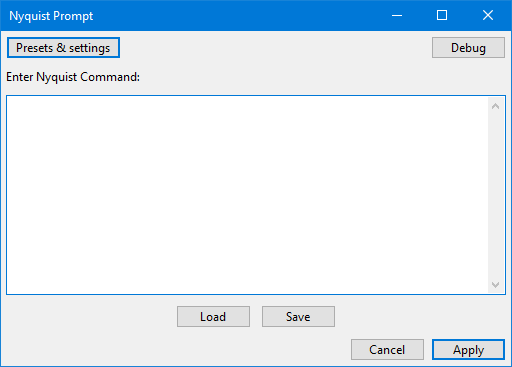

Nyquist Prompt
From Audacity Development Manual
Nyquist Prompt lets you run and debug code snippets for your own plugins created using the Nyquist programming language. See the Manual's Nyquist page for more information about writing Nyquist code. See also the Audacity wiki page on Nyquist
Note carefully that when you run Nyquist Prompt with a selected time-stretched clip active the changed speed of the clip will be automatically rendered.
|
To process audio with Nyquist commands, first select some audio.
- Accessed by:
- 
Enter Nyquist Command
Type the command as required. Enter on the keyboard moves the cursor to a new line. The last entered code is stored in the pluginsettings.cfg file in Audacity's folder for application data so is retained after exiting Audacity.
Plugin GUI can be tested if you include complete Nyquist Plug-in Headers. The Nyquist Prompt interprets header comments to produce a plugin of the defined type on the fly. By default the plugin is a process type, though other types may be created by including the appropriate header.
Buttons
Action buttons
- Opens a dropdown menu where you can save the window contents as a preset then reload those contents by selecting the preset. You can also see some descriptive text about the plugin. For details see Manage presets.
- Applies the code to the waveform selection without debug output. Your entered code will be retained next time you open Nyquist Prompt in the Audacity session. Using the keyboard hold Ctrl on Windows (or ⌘ on Mac) then press Enter. Using the keyboard on Linux, hold down Alt and press o.
- Clicking this button redirects error messages from Audacity's error log to a non-editable "Debug" window. An empty debug windows indicates that no errors were detected. Click to close the debug window, or using the keyboard; hold Ctrl on Windows (or ⌘ on Mac) then press Enter.
The Nyquist prompt supports both LISP syntax and SAL syntax. If the code you enter cannot be recognized as valid Nyquist code in either LISP or SAL syntax, an error message will appear with a hint about making a correction.
Editing or making Nyquist plugins
- Load a Nyquist plugin or script file saved with .ny extension.
- Save the current contents of the editor window as an .ny file.